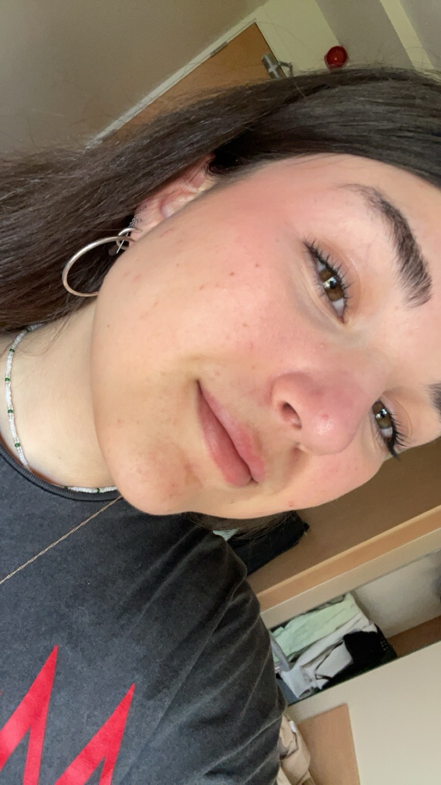

About
Hola, I’m Laura.
I’m a designer, illustrator and painter from Madrid, now living in Ireland. Every summer growing up was spent in Sancti Petri, Cádiz, and ever since I was twelve I knew I wanted to live in Ireland. So I made it happen.
Lately I’ve been painting almost only in acrylics. Alongside that I paint in gouache, make digital illustrations and design for clients. At Netsoc I started as First Year Rep, then became Graphics Designer and later Graphics Officer.
I’m drawn to bold colour, flat shapes and a little bit of drama. When I’m not painting, I’m probably adding another iced matcha to my list or playing folklore on repeat.
- From
- Madrid
- Living in
- Ireland
- Summers in
- Sancti Petri, Cádiz
- Fuelled by
- Iced matcha, oat milk
Path
How I got here
- Born and raisedMadrid
Where it all started.
- Every summerSancti Petri, Cádiz
Where I still find the most peace.
- Home nowIreland
A dream since I was twelve.
At Netsoc
- First yearFirst Year Rep
My first role in the society.
- NextGraphics Designer
Designing the society’s posters.
- ThenGraphics Officer
Leading the society’s graphics.
Favourite things